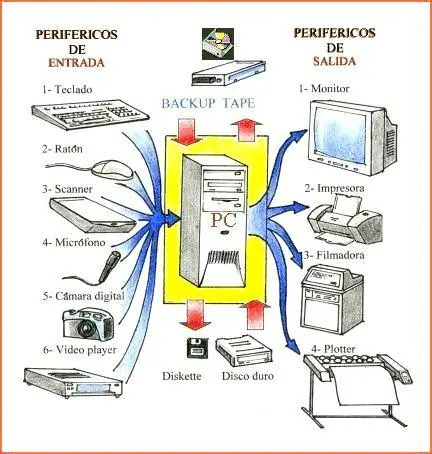

¿Que es la arquitectura de Hardware?
La arquitectura de computadoras es la organización lógica de los equipos informáticos. Se trata de un conjunto de principios que describen cómo se pueden describir las características del hardware del ordenador y cómo interactúan entre sí.
La arquitectura de los ordenadores también engloba la microarquitectura de la CPU, entre otros componentes.
La arquitectura de un ordenador determina su rendimiento, sus capacidades y sus límites.

Diferencias entre Hardware y Arquitectura de Computadores
Aunque a menudo se utilizan como sinónimos, hardware y arquitectura de computadores no son lo mismo:
- Hardware: Se refiere a los componentes físicos del ordenador, como la CPU, la RAM, el disco duro, el monitor, etc.
- Arquitectura de computadores: Hace referencia a cómo se organiza, conecta y comunica el hardware internamente. Incluye el diseño de buses, instrucciones, registros, jerarquía de memoria, etc.
Componentes del Hardware
Los elementos del hardware son los diversos físicos que conforman una computadora o un dispositivo electrónico. Estos trabajan en conjunto para permitir el funcionamiento y la ejecución de las operaciones del sistema. Algunos de los principales tipos del hardware más destacados de un ordenador incluyen:
- (CPU): La CPU es el cerebro de la computadora y se encarga de ejecutar cálculos e instrucciones, gestionar datos y coordinar todas las actividades del sistema.
- Placa madre: La placa madre conecta todos los demás componentes del hardware y proporciona las conexiones eléctricas y lógicas entre ellos.
- Placa madre: La placa madre conecta todos los demás componentes del hardware y proporciona las conexiones eléctricas y lógicas entre ellos.
- Tarjeta de video (GPU): La tarjeta de video gestiona la gráfica y el renderizado de imágenes en la pantalla. Es fundamental para los juegos, gráficos y operaciones que requieren un alto rendimiento gráfico.
- Disco duro o unidad de estado sólido (SSD): El disco duro o SSD es la memoria de almacenamiento permanente de la computadora, donde se guardan datos, archivos y el sistema operativo.
- Fuente de alimentación: La fuente de alimentación proporciona la energía eléctrica necesaria para hacer funcionar todos los componentes del hardware.
- Caja o gabinete: La caja es el recinto que alberga todos los componentes del hardware de la computadora y garantiza su protección.
- Tarjeta de sonido: La tarjeta de sonido gestiona la salida de audio y puede incluir funciones avanzadas de audio, como la grabación y el procesamiento del sonido.
- Ventiladores y disipadores de calor: Los ventiladores y disipadores de calor mantienen los componentes del hardware a una temperatura segura, evitando el sobrecalentamiento.
- Periféricos: Los periféricos incluyen el teclado, el ratón, el monitor, la impresora y otros dispositivos utilizados para interactuar con la computadora.